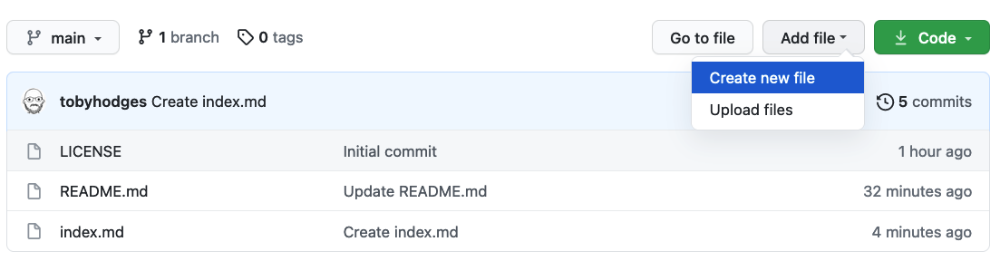

Content from Introduction
Last updated on 2022-11-15 | Edit this page
Estimated time 40 minutes
How Websites Work
Overview
Questions
- What is static web content?
- Why should I use GitHub or GitLab Pages to create my website?
Objectives
- Explain what a static site generator does.
- Choose the appropriate tool for a website/project.
When we use a web browser to visit a page on the World-Wide Web, the browser asks for information from a server - a computer storing the data relevant to the site and configured to receive and respond to requests for that data. Assuming there were no problems at this stage (e.g. asking for a page which doesn’t exist, or being unable to reach the server), our browser receives and interprets this information to render and display the webpage on our screen. (A web developer would probably be horrified to read such a gross oversimplification, which is just one reason why web developers are not the target audience of this tutorial.)
The page displayed by the web browser is the result of combining HTML - a hierarchical format describing the structural elements of the page and their raw content - with CSS - an ordered set of styling instructions telling the browser how the content should be organised and formatted - and any images that should be embedded in the page. Other information received from the server, but not displayed by the browser, includes metadata, cookies, and other non-visible elements in the HTML - information about the site that could be relevant for a computer but probably isn’t interesting to a human (there are exceptions to this) - and scripts that the browser may run to do something in response to various triggers.
Hello World in HTML
When learning a new programming language, you may often find a
reference to the popular Hello world example. These
examples typically capture the simplest code that can produce and
display the text “Hello, World!” on screen.
As HTML requires certain tags to be present and almost always in
matching pairs (open <tag> and closing
</tag>), HTML documents tend to get verbose rather
quickly.
The simplest, valid HTML Hello world is:
HTML
<!DOCTYPE html>
<html>
<head>
<title>Page title</title>
</head>
<body>
<p>Hello, World!</p>
</body>
</html>So as you can imagine, writing long HTML documents by hand is rather painful. Notice that we didn’t specify anything about how and where the text should be displayed.
To achieve this we would additionally need to include stylized tags or Cascading Style Sheets (CSS) instructions. If you do not provide CSS instructions (either inside your HTML document or as a separate file), a web browser will make a best guess regarding the layout of HTML elements on the page based on its defaults.
HTML
<h1><em>Hello</em>, World!</h1>
The HTML to produce such a table looks like this (you can copy+paste the snippet into the HTML file you created in the previous example):
HTML
<table>
<tr><th>Language</th><th>Text</th></tr>
<tr><td>English</td><td>Hello, World!</td></tr>
<tr><td>French</td><td>Bonjour, le monde!</td></tr>
<tr><td>Portuguese</td><td>Olá, Mundo!</td></tr>
<tr><td>Serbian</td><td>Zdravo, svete!</td></tr>
</table>Each row is enclosed between table
row <tr> and
</tr> tags. Within a row, <th> and
</th> tags are used to contain table
headings (special table cells displayed in bold font),
while regular table data cells are
contained within <td> and </td>
tags.

HTML
<ul>
<li>English: Hello, World!</li>
<li>French: Bonjour, le monde!</li>
<li>Portuguese: Olá, Mundo!</li>
<li>Serbian: Zdravo, svete!</li>
</ul>Here, we used unordered list tags
<ul> and </ul> to define a list
with 4 items, each in turn wrapped in individual list
item (<li> and
</li>) tags.
Static vs Dynamic Sites
Static pages are those whose contents are stored on a server in a state ready to be sent to any user who makes a request for that web page. When a request is made, the server only needs to send the information comprising that web page (such as HTML and CSS). Sites that do not change often, such as a website containing one’s CV, are often stored as static sites.
Conversely, dynamic sites are those that have their pages generated when a user makes a request for a web page. Depending on when the request is made, the content might change; for example, clicking refresh when viewing a discussion in a web forum might result in new comments showing up. The key difference is that static pages need only be generated once, after which they rest unchanged on the server, compared to dynamic pages which are regenerated by a server every time it receives a request. This lesson focuses on static sites and tools that can be used to create them, known as Static Site Generators.
One of the advantages of using static site generators is that they remove the need for us to manually produce a lot of HTML, allowing us to focus on the human-readable content we want our pages to contain. However, we still need a way to tell the generator how we want our content to look when it’s displayed in the browser. For that, we will use a tool called Markdown, which we’ll learn about in the next episode.

Figure 1.1: Page Generation Alternatives. This figure is a modified version of the original published in [JavaScript for Data Science][js4ds], and is reproduced here with permission from the author.
Static-generated sites are a great choice when the information you want to display on a website is the same regardless of who visits your site and when, and if the content of your pages is unlikely to need to change very often. This makes Static Site Generators a good choice for sites that provide documentation or lesson content like this page: the aim of the page is to deliver the same information to every visitor. The visitor can arrive, (hopefully) find and read what they need, and leave feeling happy and fulfilled.
Dynamic sites provide a lot more possibilities for providing interactivity and personalised or topical content. But creating them is a degree more complicated and also places considerable additional burden on the server, not least in terms of computational requirements and security considerations. Among other things this means that, unlike with static pages (see the rest of this lesson), you’re unlikely to find cost-free platforms to help you deliver dynamic content.
Exercise: The Perfect Tool for the Job
Given the following types of websites, reason if a static site generator is an appropriate solution to implement them.
- A personal website with About and Projects sections
- A forum or discussion platform
- A community blog or news website
- A search engine (such as google.com)
- A wiki (such as wikipedia.com)
- An online book
- personal website: In most cases, Yes. This kind of content is typically written/edited by one person and meant to have a read-only access to visitors.
- forum or discussion: Most likely No. Such website requires interactivity and ways to identify who wrote what content.
For questions 3 and 5 the answer is both Yes and No depending on the requirements and necessary functionality.
- blog/news: A simple blog or news website, maintained by a small set of users, is perfectly achievable by using a static generator. For very large groups of content creators or if access to articles needs to be controlled individually, using a static generator will lead to difficult technical challenges.
- search engine: Most often No. Implementing something as sophisticated as Google’s search would be close to impossible with a static generator. There are ways to have a simple engine that searches across all pages produced by a static generator using indexing and making clever use of browser features but this approach has many limitations.
- wiki: A simple wiki is perfectly doable with a static generator (e.g. GitHub Wiki Pages), however it becomes limiting as soon as its content needs to be edited or discussed by many users, as is the case of Wikipedia.
- online book: Definitely Yes. Static generators are perfect for this type of website. They typically provide ways to avoid repeating content (variables and templates), automatic creation of a Table Of Contents, among other goodies.
GitHub Pages
If the site you want to create is a good match to the strengths of a static site generator - it’s relatively small, will be updated relatively infrequently, and the content does not need to be personalised to the visitor - then creating it with GitHub Pages is a good option. GitHub Pages is a system allowing users to create and serve websites directly from their GitHub repositories. The service is free for public repositories and simple pages can be created and served with very little configuration required.
Behind the scenes GitHub Pages uses a static site generator called Jekyll, which we’re going to learn about later in this lesson. There are many different technologies that come together when creating a website with GitHub Pages that you have to be familiar with (as shown in the diagram below). It may sound overwhelming at first but we will explain most of these technologies in this lesson - we only don’t cover CSS/Sass (styling language that gets compiled into CSS) and JavaScript/CoffeeScript (scripting language that gets compiled into JavaScript) in detail.

First, we are going to set up a repository to store our files and learn more about how to author and format the content of our pages using HTML and Markdown, before configuring GitHub to display this content as a website using GitHub Pages.
Setting Up a Repository
Before we get into working with Markdown we must first create a
repository to work in. This repo (short for repository) is similar to a
folder on your computer, the main differences being that the folder
lives on the web in GitHub/GitLab (though you can also keep a copy on
your computer if needed) and that folder is using a version control
software called [git][git] to track changes to the files.
For our purposes we will mostly be ignoring the version control
software, though it can be handy if you need to revert to old versions
(see [Software Carpentry - Version Control with Git][swc-git] for an
introduction). In this lesson we will be working with this folder on the
web to control the website we will be creating.
Setup a GitHub account
Before you can create a repo, you will need to create a GitHub account
Make sure to login with your GitHub account and visit https://github.com. Click the green “New” repo button on the left hand side of GitHub:

or click the “+” menu in the upper righthand corner and choose “New Repository”.

Next you will need to fill in some info about your repository.

In this lesson, we will be working on a general group website. You
can imagine this website may be for your lab group, a specific project
group, or another group you work with. Under the “Repository name” field
type group-website.

We can also add a description (for instance Repo for learning how to make websites with Jekyll and GitHub pages) so we know what this repo is when we find it again after the workshop.

Under the “Initialize this repository with:” section we will check
Add a README file and Choose a license. It is
good practice to have a README file that gives more information about
your repo and to set a license for your work.
for this example repository we’ll use the
Creative Commons Zero v1.0 Universal (CC0) license, which
allows anyone to re-use and adapt the content of the repository without
restriction, but you may want to consider choosing something more
restrictive when you’re building your own website.
Checkout Other Licences
You may want to checkout this lesson or GitHub’s license documentation for more information about possible licenses.

Once you’ve finished these steps you can click the “Create Repository” button to finish creating the repo.

GitHub will then setup the repo and it should create the repo called
group-website with a README.md file and a
LICENSE file.

Keypoints
- A static site generator combines page-specific content with layout elements and styling information to construct individual static webpages.
- GitHub Pages/GitLab Pages is a good choice for people who are already familiar with Git and GitHub/GitLab.
- This approach can be used to create a relatively small website/blog on a limited budget.
Content from Authoring With Markdown
Last updated on 2022-11-15 | Edit this page
Estimated time 35 minutes
Markdown
Overview
Questions
- How can I write content for my webpages?
- How do I link to other pages?
Objectives
- Create simple pages with formatted text
Markdown is a language used to simplify writing HTML. Plain text
characters like # and * are used in place of HTML tags. These characters
are then processed by Jekyll (or another script or application) and
transformed into HTML tags. As the name Markdown suggests, the language
has been trimmed down to a minimum. The most frequently used
elements, like headings, paragraphs, lists, tables and basic text
formatting (i.e. bold, italic) are part of Markdown. Markdown’s
simplified syntax keeps content human-readable.
This is one reason it is a preferred language for formatted user input
on web sites like:
Where to Start Writing Markdown?
A lot of tools for rendering Markdown source code exist. Rendering is
the process of generating a nice view of the content using the style
information included in the source text. Chances are high, your editor
can do this. As we are working towards authoring websites using Jekyll
and GitHub pages, we will use GitHub straight away for learning the
basics of Markdown. The GitHub project you created in the last episode
contains a file README.md.
The image below shows the projects default view. This view includes a
rendered view of the content inside the file README.md.
Your project should look quite similar except for the red circle around
the pencil symbol.

Click on that pencil symbol to open an editing interface of your
project’s README.md file. Once we’ve clicked the pencil
symbol, GitHub will open that file in the editing interface.

We can change the content and have a look at the rendered view by clicking the Preview changes tab.

Let’s add Some **bold** font and see what happens when
we preview it using the preview tab. If you check the “Show diff” box on
the upper-right hand side, GitHub will show green vertical bars visually
highlighting the new content. To save the content to the file
README.md, scroll down a bit and search for a Commit
changes menu at the bottom of the page. After having changed
something, the commit menu looks like this:

Writing a Commit Message
A commit message is a short, descriptive, and specific comment that will help us remember later on what we did and why. When editing in the Github interface, it will suggest a vague message about which file you’ve updated or added. It is best practice to change this message to a short but more informative message about what in the file has changed. This more descriptive message will make it much easier if future you needs to go looking through the history for which commit made a specific change. You can find more about writing commit message in the Software Carpentry Version Control with Git lesson.
Commit this change to the main branch.
Writing Markdown
Now that we know about the editing interface and preview tab of our
projects README.md we can use it as a text editor and
investigate selected Markdown features.
Our README.md already contains vanilla text and two
formatting features:
- Heading
# group-website - Emphasis using
**bold**.
Let’s learn some more Markdown by adding some formatting and see what
happens when we preview it using the preview tab. Add the following to
your README.md file.
MARKDOWN
# group-website
Repo for learning how to make websites with Jekyll and GitHub pages
## Learning Markdown
Vanilla text may contain *italics* and **bold words**.
This paragraph is separated from the previous one by a blank line.
Line breaks
are caused by two trailing spaces at the end of a line.
[Carpentries Webpage](https://carpentries.org/)
### Carpentries Lesson Programs:
- Software Carpentry
- Data Carpentry
- Library CarpentryYou can then click the preview tab again to see how the formatting renders.

If you click the Show diff checkbox in the right corner,
GitHub will include a preview of differences too - the green bar
indicates added lines, the red bar indicates deleted lines, and yellow -
lines that have been modified.
Markdown Trailing Spaces Are Meaningful
In the example above there are two spaces at the end of
Line breaks. These introduce what is called a hard
line break, causing that paragraph to continue in the next line
by adding a <br/> to the generated HTML.
If you break the line in a markdown file but don’t include the two
trailing spaces the generated HTML will continue in the same line
without introducing a <br/>. This is
called a soft line break.
In some cases you may find that soft line breaks do
introduce a <br/>. This can happen when using
different markdown flavors.
See for instance:
MARKDOWN
Soft line
break
Hard line
breakThat produces:

To keep this addition to our README.md we need to commit
these changes to save them. Scroll down to the bottom of the page, add a
commit message if you wish, and then commit to the main
branch.

Let’s do an exercise to try out writing more markdown.
Exercise: Try Out Markdown
Use [this cheatsheet][github-flavored-markdown] to add the following
to your README.md:
- Another second level heading
- Some text under that second level heading that includes an link and
strikethroughtext. - A third level heading
- A numbered list
- Bonus: Add this image https://raw.githubusercontent.com/carpentries/carpentries.org/main/images/TheCarpentries-opengraph.png
For example your markdown might look like the following:
MARKDOWN
## More info on the lesson
You can find this lesson [here](https://carpentries-incubator.github.io/jekyll-pages-novice/).
### Four reasons you should learn Markdown:
1. Less formatting than HTML
2. Easy to read even with formatting
3. Commonly used for websites and software development
4. We ~~don't~~ use it in The Carpentries

Reference-Style Links
Up to now, we have used inline-style links which have the URL inline with the description text, for example:
MARKDOWN
[Carpentries Webpage](https://carpentries.org/)If you use a link more than once, consider using so called
reference-style links instead. Reference-style links reference
the URL via a label. The label goes into square brackets
[ ] right after the description text of the link and then
later, usually at the bottom of the page, you can connect that label to
the url it references to complete the link. This looks like:
MARKDOWN
[Carpentries Webpage][carpentries]
[carpentries]: https://carpentries.org/and helps to follow the [DRY principle][dry-principle], avoiding redundant specification of information.
Note about image use and attribution
When using images on your website that you don’t own, it’s important to reuse the content responsibly. This means ensuring that the image owner has given permission for the image to be reused and that the image includes appropriate attribution to the owner. If you’re unsure about the availability of an image you can always contact the owner or check if a license is provided alongside the image which may include conditions for reuse. Anyone can re-use and edit Public Domain images so searching for images in the public domain can be a good way to find images for your website. However, it is still good practice to give credit when possible, even for public domain images.
We will continue to use Markdown and learn more throughout the rest of the lesson. Though later we will find we need HTML again for some features.
Markdown Flavours
The initial description of Markdown was informal and contained certain ambiguities so over the years different Markdown implementations and syntax variations (often referred to as “flavours”) appeared to support various syntax features and extensions. As a consequence, the syntax from one variant may not be interpreted as expected in another - you have to be aware which one is being used by a particular platform. Here are a few well-known variants:
- [GitHub-flavored Markdown][github-flavored-markdown] (used on this lesson and by GitHub)
- [GitLab-flavored Markdown][gitlab-flavored-markdown] (used by GitLab)
- [Kramdown][kramdown] (a fast, Ruby, open source implementation released under the MIT licence)
Optional Exercise: Add Your Repository Details to CodiMD
If your instructors are using CodiMD (or HackMD or any other Markdown-based shared document platform) to take notes during this workshop, use Markdown syntax to add a link in that document to the repository you are using to follow along with this lesson. The link text should be your GitHub username, and the target your repository. Your instructors will direct you towards the appropriate location in the document to add your link.
More Markdown Features
Check out our Extras page on Markdown for a more comprehensive overview of Markdown, including how to create fenced code blocks and do syntax highlighting for various languages.
Content from Hosting Websites on GitHub
Last updated on 2022-11-15 | Edit this page
Estimated time 40 minutes
Now that you know how to create Markdown files, let’s see how to turn them into Web pages. GitHub has a service just for that called GitHub Pages.
Overview
Questions
- How do I publish my page or a website on the Web via GitHub?
Objectives
- Publish Markdown files as HTML on the Web with GitHub Pages
Publishing a Website With GitHub Pages
GitHub Pages is a free website hosting service by GitHub that takes files (Markdown, HTML, CSS, JavaScript, etc.) from your GitHub repository which is configured as a website, optionally runs the files through a build process, combines them and publishes them as a website. Any changes you do to the files in your website’s GitHub repository will be rendered live in the website.
There are other services available to create and publish websites but one of the main advantages of GitHub Pages is that you can version control your website and therefore keep track of all your changes. This is particularly helpful for collaborating on a project website. GitLab offers very similar services but GitHub pages is the simplest approach.
Let’s continue from the GitHub repository we have created in the
previous episode. One important file you should already have is
README.md, which will become the homepage of your project
website (until we add the index file later on).
Enabling GitHub Pages
In order to tell GitHub that your repository contains a website that needs rendering you need to configure GitHub Pages settings. You can do so from your repository’s Settings page, as explained below.
You may have noticed that when we created our repository in previous
episode, by default GitHub created a branch called main and
stored our files there. We now need to tell GitHub Pages that this
branch contains our website files.
What Is a Branch?
You may have never heard about Git branches and wonder what they are.
A branch is one version of your project (the files in your repository)
that can contain its own set of commits - you can have many branches
(versions) of your repository. The default branch automatically created
with a new github repository is called main.
- Click on the repository’s
Settingstab (the one with the little cog/gear icon) as shown on the figure below:

- On the menu on the left hand side, click on
Pages

- You will see that the GitHub Pages settings are currently disabled.
Select branch
mainto tell GitHub which branch to use as a source and clickSaveto enable GitHub Pages for this repository.

- The link to your repository’s website will appear in the highlighted box above. If you click the link - your default browser will open and show your project website. If this does not happen, you should manually open your favourite web browser and paste the URL.

- It may take a while (from a few seconds to a few minutes) for GitHub to compile your website (depending on GitHub’s availability and the complexity of your website) and it may not become visible immediately. You will know it is ready when the link appears in green box with a “tick” in front of the web address (as shown in the figure below).
- Once ready, you should see the contents of the
README.mdfile that we created earlier, rendered as a website.

Using Branch gh-pages for
Websites
By convention, GitHub Pages uses branch called gh-pages
to look for the website content. By creating a branch with that name,
you implicitly tell GitHub that you want your content published and you
do not need to configure GitHub Pages in Settings. Once you
create gh-pages from your current branch (typically
main, created by default when you created the repository),
you can then choose to delete the other branch to avoid any confusion
about where your content is stored.
Either of the above two approaches to turning a repository to a
website will give you the same result - the gh-pages
approach is perhaps more common as it favours convention over
configuration.
Understanding GitHub Pages’ URLs
You may have noticed a slightly strange URL for your website appearing in that green box with a “tick” in front of it. This URL was generated by GitHub Pages and is not random. It is formatted as ‘https://GITHUB_USERNAME.github.io/REPOSITORY_NAME’ and is formed by appending:
- your GitHub username or organisation name under which the repository is created (GITHUB_USERNAME)
- ‘.github.io/’ (GitHub’s web hosting domain)
- the repository name (REPOSITORY_NAME)
Because the repository name is unique within one’s personal or organisational GitHub account - this naming convention gives us a way of neatly creating Web addresses for any GitHub repository without any conflicts.
Customising Domain
GitHub Pages supports using custom domains, or changing your site’s URL from the default ‘https://GITHUB_USERNAME.github.io/REPOSITORY_NAME’ to any domain you own. Check out the documentation on configuring a custom domain for your GitHub Pages site.
Making Your Pages More Findable
On the right hand side of your repository on GitHub, you can see the
details of your repository under ‘About’. It is good practice to update
your repository details with a brief description. This is also a place
where you can put your repository’s Web URL (as not everyone will have
access to your repository’s Settings to find it) and add
descriptive topics or tags about the content or technologies used in
your repository or project.
You can edit the details of your repository by clicking on the little cog/gear button as shown on the figure below.

By doing this, you add a link to the repository’s website on your repository’s landing page and anyone (including yourself) can access it quickly when visiting your GitHub repository.
Index Page
Up to now, the content of your webpage is identical to what visitors
to your repository on GitHub will see in the project’s
README.md file. It is often better to have different
content in the homepage of your site - aimed at visitors to the website
- than in the README, which is supposed to provide information about the
GitHub repository e.g. license information, local installation
instructions, the structure and configuration of the repository, list of
collaborators/authors, etc. By default, the homepage for a GitHub Pages
website is built from a file called index.md: in the
absence of a file with that name the “fallback” option is to use
README.md, which is why your homepage is currently being
built from that file.
To separate the contents of the repository’s README from the
website’s homepage, create a new file called index.md.
To create a new file from GitHub interface, click the
Add file button and select Create new file
from the dropdown.

Next, type some text into index.md. As shown below add a
first level header that says
Building Websites in GitHub.

We are now ready to start adding more content to our website. Let’s do some exercises.
- Edit
index.mdfile to look something like:
MARKDOWN
# Building Websites in GitHub
## Description
This is an example website built while learning how to use Jekyll and GitHub Pages.Both the pages built from README.md and
index.md have been served to us at the “root” of our site:
the page we see when we point our browser to
https://YOURUSERNAME.github.io/REPONAME/. The actual name
of this page is index.html (navigate to
https://YOURUSERNAME.github.io/REPONAME/index.html to see
this for yourself), i.e. the file index.md is converted
by Jekyll to a page called index.html.
As more Markdown files are added to your repository, the same process
will automatically occur for those files too. For example, a file called
contact.md will be converted to contact.html
and cake-recipes.md will become
cake-recipes.html. However, unlike the special
index.html file, which Web servers look for as the default
“landing page” to display when handling a request for a URL with a
trailing forward slash, we must request these pages by name when we want
to view them on the Web. Continuing with the above examples, if we
wanted to visit the cake-recipes.html page, we would need
to point our browser at
https://YOURUSERNAME.github.io/REPONAME/cake-recipes.html,
and https://YOURUSERNAME.github.io/REPONAME/contact.html
for the page built from contact.md.
However, when linking between pages of the same site
(relative linking), GitHub Pages allows us to refer to the name
of the original Markdown file, and handles the URL conversion for us.
This means that, to link to cake-recipes.html from
index.html, we can write a link such as
[Read our recipe for Triple Chocolate Raspberry Surprise Cake and more](cake-recipes.md)
and Jekyll will convert this to the appropriate URL. (It won’t write or
bake the recipe for us, unfortunately.) Relative links can point to
files in other directories too:
recipes/chocolate-salted-caramel-pudding.md and
../local-dentists.md are both valid link targets (assuming
the relevant files exist in your repository).
about.md from the GitHub
interface:  Edit about.md file to look something
like:MARKDOWN
# About
## Project
This research project is all about teaching you how to create websites with GitHub pages.
## Funders
We gratefully acknowledge funding from the XYZ Founding Council, under grant number 'abc'.
## Cite us
You can cite the project as:
> *The Carpentries 2019 Annual Report. Zenodo. https://doi.org/10.5281/zenodo.3840372*
## Contact us
- Email: [team@carpentries.org](mailto:team@carpentries.org)
- Twitter: [@thecarpentries](https://twitter.com/thecarpentries)Note how we used various Markdown syntax: quoted text
(>), italic font (*) and external links (a
combination of square [] and round brackets ()
containing the link text and mailto or regular Web URLs
respectively).
- Edit
index.mdto add a link toabout.md.
MARKDOWN
# Building Websites in GitHub
## Description
This is an example website built while learning how to use Jekyll and GitHub Pages.
More details about the project are available from the [About page](about).
Note that the URL has ‘/about’ appended to it - you can use this URL to access the ‘About’ page directly.
Keypoints
- GitHub Pages is a static site hosting service that takes files in various formats (Markdown, HTML, CSS, JavaScript, etc.) straight from a repository on GitHub, runs them through its website engine Jekyll, builds them into a website, and publishes them on the Web
- By convention, if you create a branch called
gh-pagesin your repository, it will automatically be published as a website by GitHub - You can configure any branch of a repository to be used for website
(it does not have to be
gh-pages) - GitHub publishes websites on special URLs formatted as ‘https://GITHUB\_USERNAME.github.io/REPOSITORY\_NAME’
Content from Starting With Jekyll
Last updated on 2022-11-15 | Edit this page
Estimated time 30 minutes
Jekyll is a powerful static site
generator behind GitHub Pages. It creates static HTML website content
out of various files in your repository (Markdown files, CSS style
sheets, page templates/layouts, etc.). This ‘compiled’ content is then
served as your website via the github.io Web domain
(remember your website’s URL from the previous episode?). Jekyll
automatically re-generates all the HTML pages for your website each time
you make a change to your repository.
Overview
Questions
- How can I use values stored in variables in my pages?
- How can I configure global values/settings for my site?
Objectives
- Substitute variable values into page content
- Adjust the configuration of the site and individual pages
- Learn how to identify and correct errors that lead to Jekyll build failures
Jekyll makes managing your website easier because it depends on templates. Templates (or layouts in Jekyll notation) are blueprints that can be reused by multiple pages. For example, instead of repeating the same navigation markup on every page you create (such a header, a footer or a top navigation bar), you can create a Jekyll layout that gets used on all the pages. Otherwise, each time you update a navigation item - you’d have to make edits on every page. We will cover Jekyll layouts in a bit; for now let’s start learning Jekyll and its scripting language called Liquid.
Global Parameters
Jekyll’s main configuration options are specified in a
_config.yml file, which is written in a language called YAML and placed in your site’s root
directory. Parameters configured in _config.yml are global
or site-wide - that means they are accessible in every page of your
website.
YAML
YAML is a human-readable data-serialization language. It is commonly used for configuration files and in applications where text data is being stored or transmitted and it is programming language agnostic.
Let’s create some configuration parameters for our website.
From the GitHub interface, create
_config.ymlfile in your site’s root directory.Add parameters
descriptionandemailto it as:
YAML
description: "This research project develops training materials for reseachers wanting to learn to build project
websites in GitHub with GitHub Pages."
email: "team@carpentries.org"- Commit your changes.
Global configuration settings from _config.yml are made
available as site.PARAMETER_NAME variable in every page
within the website. So, global parameter email we defined
above would be accessed as site.email.
In order to access the parameter’s value within a page, you use
Liquid’s notation to output content by surrounding a variable in curly
braces as {% raw %}{{ variable }}{% endraw %}.
Predefined Global Parameters
In addition to the global parameters you define, Jekyll also makes a
number of useful
predefined site-wide variables available to you within your website:
e.g. {% raw %}{{ site.time }}{% endraw %} (the current
time) or {% raw %}{{ site.pages }}{% endraw %} (a list of
all pages).
Let’s make use of global parameters in our pages.
- Modify
index.mdfile to make use of our global parameters like this:
MARKDOWN
# Building Websites in GitHub
## Description
{% raw %}{{ site.description }}{% endraw %}
More details about the project are available from the [About page](about).
Have any questions about what we do? [We'd love to hear from you!]({% raw %}mailto:{{ site.email }}{% endraw %})- We can use the same parameter in different pages. Let’s reuse
{% raw %}{{ site.description }}{% endraw %}and{% raw %}{{ site.email }}{% endraw %}inabout.mdlike this:
MARKDOWN
# About
## Project
{% raw %}{{ site.description }}{% endraw %}
## Funders
We gratefully acknowledge funding from the XYZ Founding Council, under grant number 'abc'.
## Cite us
You can cite the project as:
> *The Carpentries 2019 Annual Report. Zenodo. https://doi.org/10.5281/zenodo.3840372*
## Contact us
- Email: [{% raw %}{{ site.email }}{% endraw %}](mailto:{% raw %}{{ site.email }}{% endraw %})
- Twitter: [@thecarpentries](https://twitter.com/thecarpentries)Go to your website to see the changes.
Note that site parameters will not render nicely when viewing files in GitHub (they will be displayed as text
{% raw %}{{ site.PARAMETER_NAME }}{% endraw %}rather than the parameter’s rendered value) but will in the website.
Exercise: Create a Global Twitter Parameter
In about.md we have a Twitter URL under the ‘Contact us’
section. That’s one piece of information that could go into global
parameters in _config.yml as you may want to repeat it on a
footer of every page. Make changes to your website to extract Twitter
URL as a global parameter.
- Add parameter twitter to
_config.yml:
YAML
description: "This research project develops training materials for reseachers wanting to learn to build project
websites in GitHub with GitHub Pages."
email: "team@carpentries.org"
twitter: "https://twitter.com/thecarpentries"- Make use of the twitter parameter in
about.md:
MARKDOWN
# About
## Project
{% raw %}{{ site.description }}{% endraw %}
## Funders
We gratefully acknowledge funding from the XYZ Founding Council, under grant number 'abc'.
## Cite us
You can cite the project as:
> *The Carpentries 2019 Annual Report. Zenodo. https://doi.org/10.5281/zenodo.3840372*
## Contact us
- Email: [{% raw %}{{ site.email }}{% endraw %}](mailto:{% raw %}{{ site.email }}{% endraw %})
- Twitter: [{% raw %}{{ site.twitter }}{% endraw %}]({% raw %}{{ site.twitter }}{% endraw %})- Note that you should not see any changes to your website really. However, you can now access your Twitter URL from any website page, should you need to.
Reuse and Reduce
Jekyll’s global parameters are a useful way to keep all your site-wide configuration in a single place (even if you only use them once). In combination with Jekyll layouts/templates (to be covered in the next episode) they are a great way of creating reusable markup snippets that can be repeated on multiple or even on every page of your website. Reuse helps you reduce the amount of code you have to write.
When Things Go Wrong
So far we have seen how to successfully use Jekyll to produce a website. There are however some situations where Jekyll may fail to do so either due to a typo or missing information.
For instance, a missing closing quote " in the
twitter variable.
YAML
description: "This research project develops training materials for reseachers wanting to learn to build project
websites in GitHub with GitHub Pages."
email: "team@carpentries.org"
twitter: "https://twitter.com/thecarpentriesIf you navigate your GitHub repository you would be able to see
something break in about.md where we use
{% raw %}{{ site.twitter }}{% endraw %} however, contrary
to what we saw before with invalid Markdown, Jekyll will refuse to build
the website and produce an error message.
We will see after this where to find the error message and identify what caused them.
If you were keeping an eye on the GitHub repository page until now, you may have noticed a yellow circle visible when the website is still being processed and a green check mark (✓) when successful. You may have also noticed that in the same location there is now a red cross/X next to the commit message (❌). This indicates that something went wrong with the Jekyll build process after that commit.

You may also find an email from GitHub in your inbox with details about the error. But let’s look at our repository again. If we click the red cross/X next to the commit message (❌) a little pop-up will appear with additional information.

Visiting the page behind the Details link will give us the information we were missing.

From this page we can see that what caused the failure affected line
5 of the _config.yml file. This matches the line where we
deleted the ". Since this typo prevents Jekyll from
building the page, the process cannot continue.
Lets go ahead and fix your intentional typo and re-add the missing
":
YAML
description: "This research project develops training materials for reseachers wanting to learn to build project
websites in GitHub with GitHub Pages."
email: "team@carpentries.org"
twitter: "https://twitter.com/thecarpentries"After a few seconds we should see a green checkmark again and our website will be updated.
Local Parameters
In addition to global (site-wide) parameters available via the
site global variable, Jekyll makes local
(page-specific) information available to you via the page
variable. Some of these are pre-defined - like page.title,
which gives you the title of the page that is currently active/being
visited. Others you can define yourself. Check this list of
predefined page parameters.
You can define local parameters using YAML notation within a Markdown
page by including it in a page header and delimiting the header with
triple-dashed lines ---. These headers are called front
matter and are used to set variables and metadata on individual
pages in your Jekyll site.
Front matter
From Jekyll’s website:
Any file that contains a YAML front matter block will be processed by Jekyll as a special file. The front matter must be the first thing in the file and must take the form of valid YAML set between triple-dashed lines.
Here is an example:
YAML
---
layout: post
title: "My first blog post"
author: "Danger Mouse"
---Between these triple-dashed lines, you can overwrite predefined
variables (like page.layout or page.title) or
create custom ones you need locally on the page (like
page.author). These variables will then be available for
you to access using Liquid’s tags
(e.g. {% raw %}{{{% endraw %} page.title {% raw %}}}{% endraw %}
) further down in the file and also in any files that include this one.
Note that these variables are only accessible on that page. You will get
an error if you try to reference a page.variable that was
defined on a different page.
Exercise: Practice With Local Variables
Let’s practice making and using local variables. Think of a local
variable you may want to use only in your about.md or
index.md page. If you cannot think of any, create a local
variable called ‘lesson-example’ with the value of ‘https://carpentries.github.io/lesson-example/’
and reference it in your index.md.
What did you add to your index.md to create this
variable? Where did you add the front matter in your
index.md? How did you reference that variable?
Create a YAML header at the very top of index.md and add
the lesson-example variable in between the triple-dash
delimiters. You can then reference the value within your
index.md page as
{% raw %}{{{% endraw %} page.lesson-example {% raw %}}}{% endraw %}.
Your file should now look like:
MARKDOWN
---
lesson-example: "https://carpentries.github.io/lesson-example/"
---
# Building Websites in GitHub
## Description
{% raw %}{{ site.description }}{% endraw %}
More details about the project are available from the [About page](about).
See some [examples of our work]({% raw %}{{{% endraw %} page.lesson-example {% raw %}}}{% endraw %}).
Have any questions about what we do? [We'd love to hear from you!]({% raw %}mailto:{{ site.email }}{% endraw %})Note that this variable is not accessible from about.md
page and is local to index.md.
Exercise: Practice With Troubleshooting
Sometimes typos happen and can make your website change in surprising ways. Let’s experiment with some possible issues that might come up and see what happens.
Try the changes listed below on your index.md file and
see what happens when the page renders. You will want to correct the
previous mistake each time.
- Use a global or local variable that you didn’t define first.
- Leave the dash off the end of the YAML header.
- Don’t put a space between the YAML header and the rest of the page
- Put the YAML header in a different location in the page.
- The place where you used the undefined variable is blank but otherwise no error. Example:
MARKDOWN
Hi! {% raw %}{{ site.greeting }}{% endraw %}. What have you been up to?- The header shows somewhat in the file and the variable that was defined goes to the index page intead of the link we set.
MARKDOWN
---
lesson-example: "https://carpentries.github.io/lesson-example/"
Examples of our work can be found at: {% raw %}{{ page.lesson-example }}{% endraw %}- This doesn’t seem to affect our page but can often make more complex pages break.
MARKDOWN
---
lesson-example: "https://carpentries.github.io/lesson-example/"
---
Examples of our work can be found at: {% raw %}{{ page.lesson-example }}{% endraw %}- This also makes the header somewhat show in the page and breaks the variable link we created.
MARKDOWN
Examples of our work can be found at: {% raw %}{{ page.lesson-example }}{% endraw %}
---
lesson-example: "https://carpentries.github.io/lesson-example/"
---Keypoints
- Variables can be defined globally in
_config.ymlor locally within YAML header (front matter) of a page - Variable values can be substituted into page content with Liquid
notation:
{{ variable }} - Global variables are accessible from any page of your website; local variables can only be accessed within the page in which they were defined (and any pages that include this page)
- Errors can happen but Jekyll will often tell us what’s wrong
Content from Reusing Blocks of Content
Last updated on 2022-11-15 | Edit this page
Estimated time 75 minutes
Overview
Questions
- How can I reuse the same chunks of material in multiple pages?
Objectives
- Create reusable blocks of content and insert them into pages
In the previous episode, we discussed the benefits of using global and local variables to reuse values throughout our pages. However, repeated use of content in and across websites is usually not limited to individual values such as email addresses and social media handles.
Exercise: What Gets Reused?
Look at the two pages linked below, and browse some other pages on the same site.
- [The Software Sustainability Institute][ssi-homepage]
- [DiverseKids Book Store][diversekids]
What content is being reused between pages on these sites? Pair up and compare your partner’s notes with your own. Can you identify any common type(s) of content that is being reused in these sites?
The Software Sustainability Institute website reuses many structural elements, such as the page header (containing the “top menu,” the institute’s logo, links to social media, etc) and footer (containing copyright and licensing information, links to the privacy policy and accessibility statement, a form to subscribe to the institute’s newsletter, etc). Elsewhere, blocks of text and images are reused in the main body of multiple pages, e.g. blog and news posts all end with a description of how the reader can contact the SSI to discuss the content.
The DiverseKids site has the same kind of shared header and footer on each page: this is a common theme across most websites, helping to improve navigation and other aspects of the user experience and achieve consistent “branding” across the whole site. The books listed under each category include a title, a price, and cover image. The category links themselves are also shared across each page, probably generated from the existing categories of books in the collection, and updated automatically when a category is added or removed.
The most commonly reused content is structural: menus and branding information used to present a consistent and recognisable interface to the user regardless of which specific page of the site they’re visiting. We’ll look more at that in the next episode. But some content, such as contact statements and post/product listings, can be reused in the body of pages. The motivation for reusing content like this is that, if you need to update that content - changing the contact address, updating a price or picture associated with a listing, and so on - you need only change this information in one place for the update to be propagated across the whole site. This is related to the DRY (Don’t Repeat Yourself) principle of good practice in programming.
DRY (Don’t Repeat Yourself) Principle
DRY principle is one of the basic principles of software development aimed at reducing repetition of information.
As far as we know, the sites linked in the previous exercise aren’t built with Jekyll. But the principles behind reusing content apply regardless of the particular framework being used to build the site.
Reusing Site Navigation Header
Let’s look at an example of how we can create a block of common
content and reuse it in multiple pages on our site. Websites typically
have some navigation links at the top of each page to help visitors
navigate to various portions of the site. To make these links appear
above every page on our site, we could add the same code immediately
after the YAML header of each Markdown file in our repository. But if we
wanted to adjust the menu - adjust the navigation link target, add a new
navigation link, remove a link, etc. - we would need to make the same
adjustment on every page. This is both time-consuming and error-prone:
it would be easy to accidentally mistype a link or forget to update one
of the files. Instead, we can go some way to avoid this hassle by using
some magic that Jekyll provides: include tags.
To demonstrate this, we will save an HTML snippet for creating
navigation links into a new file called navigation.html in
a new folder called _includes within our repository. The
folder _includes has special meaning to Jekyll - it tells
Jekyll where to look for code snippets that can be reused (included) in
other parts of the website.
Click “Create new file” under the “Add file” dropdown on your repository homepage
In the “Name your file…” box, type
_includes/. As you enter the “/” after the folder name “_includes”, the folder is automatically inserted in the path displayed in front of the box for naming the file you are adding.You can then name the file
navigation.htmland, when you commit the changes, the_includesfolder will have been added to your repository too.Insert the following HTML snippet into
navigation.htmland commit the changes:
HTML
{% raw %}<table>
<tr>
<td><a href=".">Home</a></td>
<td><a href="about">About</a></td>
</tr>
</table>
<hr>{% endraw %}The snippet will create a table with a single row with two links followed by a horizontal line separator.
- Now insert the following
includedirective at the beginning ofindex.md:
MARKDOWN
{% raw %}---
lesson-example: "https://carpentries.github.io/lesson-example/"
---
{% include navigation.html %}
# Building Websites in GitHub
## Description
{{ site.description }}
More details about the project are available from the [About page](about).
See some [examples of our work]({{ page.lesson-example }}).
Have any questions about what we do? [We'd love to hear from you!](mailto:{{ site.email }}){% endraw %}Refresh the index.html page and, barring any typos,
e.g. in the name of the file, you should see the navigation links on the
top of the page.

You can add the same include tag at the top of all the
other Markdown files for your site to get the same navigation section
displayed on every page.
Insert the include directive at the top of
about.md so that it now looks as follows:
MARKDOWN
{% raw %}{% include navigation.html %}{% endraw %}
# About
## Project
{% raw %}{{ site.description }}{% endraw %}
## Funders
We gratefully acknowledge funding from the XYZ Founding Council, under grant number 'abc'.
## Cite us
You can cite the project as:
> *The Carpentries 2019 Annual Report. Zenodo. https://doi.org/10.5281/zenodo.3840372*
## Contact us
- Email: [{% raw %}{{ site.email }}{% endraw %}](mailto:{% raw %}{{ site.email }}{% endraw %})
- Twitter: [{% raw %}{{ site.twitter }}]({{ site.twitter }}{% endraw %})The include tag can be used to insert the Markdown or
HTML contained in any file saved within _includes
directory: provide the path to that file relative to
_includes/ and Jekyll will substitute the contents into the
page before rendering it as HTML. Like the _config.yml file
that contains the configuration for your Jekyll site, the
_includes folder has a name beginning with an underscore to
show that it has a special meaning to Jekyll. We will see another
example of this shortly.
Why Not Use Variables?
We must place our blocks of content for inclusion in separate files
because Jekyll does not support substitution of variables within
variables. If you’d like to investigate further, you might try
creating a global variable in your site’s _config.yml which
includes a call to another variable in its value, e.g.
social: "{% raw %}Follow us on [Twitter]({{site.twitter}}){% endraw %}",
and using it in a page
({% raw %}{{site.social}}{% endraw %} for the example
above).
Reusing Link References
You can use include tags to help minimise the effort
required to keep links up-to-date across your site. In the Authoring with Markdown
section, we learned about writing reference-style links in Markdown,
e.g. [link text][link-target] in the body of the file with
a corresponding [link-target]: https://carpentries.org link
reference (usually all such references are kept at the bottom of the
file). Using include tags, the link references for every
page on your site can be stored in a file in the _includes
folder (we recommend the name _includes/links.md) and
inserted into the end of each page. With this approach, any time you
need to update one of these link references, e.g. if the URL changes to
your host institute website, you only need to change the URL in
_includes/links.md to update the target of all the relevant
links across your site.
Content from Page Layouts
Last updated on 2022-11-15 | Edit this page
Estimated time 55 minutes
Overview
Questions
- How can I design the layout for all pages on my site?
- Where can I find pre-built themes for my site?
- How can I create new layouts based on those I already have?
Objectives
- Apply a template layout to a page
- Find and implement pre-existing themes to determine the style of a site
- Create new page templates that inherit from existing layouts
Elements that will appear on every page across our website, like the
banner image we included in our pages in the previous section, form part
of the structure of the page: unlike the content specific to each page,
these structural elements do not change from page to page. As such,
although the include tags reduce the pain endured when
adjusting that repeated content, it is not good practice to
include the same content over and over again. This
structure can instead be defined within the layout of the pages
of the site.
Common elements found in a layout are logos, banners, navigation menus, footer content such as copyright and licensing information: material often found at the very top or very bottom of a webpage.
Defining a Layout
Jekyll layouts are defined as HTML files in a special
_layouts folder. We will want our navigational links to
appear on every page of our site so, instead of using an
include tag on each page individually, we should add it to
the layout used for each page. Just like our site’s pages, layouts can
include blocks defined in other files, but the catch is
that these must also be HTML (remember the last exercise when we asked
you to create a footer in HTML instead of Markdown?).
We will now define a new page layout called default,
which we will save in a file _layouts/default.html. Having
defined our navigational links in a separate file, we will start with a
layout file that only includes these links:
MARKDOWN
{% raw %}{% include navigation.html %}{% endraw %}You have just defined the first layout for pages on your site. Congratulations!
Add layout: default to the YAML front matter of
index.md to apply this layout to your site’s home page,
then do the same in the front matter of about.md. When you
reload your site’s homepage (or any page you applied the layout to), you
will see that there is good news and bad news: The good news: the
navigation links are there again; the bad: all the other page content
has disappeared!
The page content is missing because we haven’t yet told Jekyll where
to put it. To do that we need to add the special content
variable into the layout file:
MARKDOWN
{% raw %}{% include navigation.html %}{% endraw %}
{% raw %}{{ content }}{% endraw %}We can use the content variable to tell Jekyll where it
should place all the content defined in the Markdown of the
page within this layout. If we make the change shown in the
example above to _layouts/default.html and reload our
site’s homepage, we now see the page content has returned but we have
two more problems: the styling of our pages has changed (for the worse)
and the navigational links appear twice!

The duplication is happening because the
{% raw %}{% include navigation.html %}{% endraw %} tag is
still present in index.md.
Now that we have cleaned the duplicated navigation links, we may want to add another element to our layout. In a similar manner to the navigation links appearing on every page, we may want a common footer to appear too.
Include the footer file in the _layouts/default.html
layout file as follows:
HTML
{% raw %}{% include navigation.html %}
{{ content }}
{% include footer.html %}{% endraw %}Remove all references to footer.html from pages as they
will now be included via the layout. Check that this works by reloading
any of the pages that use the default layout. You should
see a footer at the bottom of the page.
HTML Structure, Metadata and a Default Layout
Before we defined a layout for our pages, Jekyll used a default theme to style the site. That default has been overwritten now that we applied a layout file to our site and that means, if we want to use our own customised layouts, we will need to start telling the browser in more detail how we would like our pages to be styled. There is still more to learn about page layouts, so we will come back to this issue of styling at the end of the episode.
You might recall from the
introduction to this tutorial, that a valid HTML page
consists of more than only the content we want to display. We haven’t
written these extra elements (<html>,
<head>, <meta>, etc) in our layout
file: but there are some advantages to defining these yourself: these
invisible elements of a web page describe metadata about the page, which
can be used by Internet search engines to better understand what the
page is about and who it is for. This information is factored in when
the search engine indexes the page, and subsequently makes it more
findable for your target audience. (This is one consideration in the
much larger field of [Search Engine Optimisation][seo-wikipedia].)
For example, to make the browser automatically adjust the way your
pages are shown on different displays/devices, you could include the
metadata element
<meta name="viewport" content="width=device-width, initial-scale=1.0">
inside the <head> of your pages. ([Read this
W3Schools page to learn more][w3-viewport].)
It is common practice to define the structural HTML elements of your
site’s pages inside a _layouts/default.html file. This file
defines the bare minimum layout your pages should have.
Exercise: Adding HTML Structural Elements to Default Layout
Modify the default layout file _layouts/default.html
with the following content:
HTML
{% raw %}<!doctype html>
<html lang="en">
<head>
<meta charset="utf-8">
<title>{{ page.title }}</title>
</head>
<body>
{% include navigation.html %}
<h1>{{ page.title }}</h1>
<section>
{{ content }}
</section>
{% include footer.html %}
</body>
</html>{% endraw %}What do you notice has changed about the pages that use this layout?
After updating the layout, each page includes the page title displayed twice.
Note that we have also included some additional HTML elements in our
default layout - the display of the page title as level-one heading and
wrapping the main page content within <section> and
</section> tags.
We have not been defining the title in the front matter of each of
our pages, and Jekyll is guessing the page title based on the first
heading it finds. The layout displays the page title at the top of the
page, above the page content, which also contains the page title. As a
result, the title ends up being displayed twice. To fix this problem, we
must remove the first-level headings from the Markdown content of our
pages and instead define the title in the page front matter. For
example, about.md should look like this after the
change:
MARKDOWN
---
layout: default
title: About
---
## Project
{{ site.description }}
## Funders
We gratefully acknowledge funding from the XYZ Founding Council, under grant number 'abc'.
## Cite us
You can cite the project as:
> *The Carpentries 2019 Annual Report. Zenodo. https://doi.org/10.5281/zenodo.3840372*Layout Inheritance
To prevent the duplication of all this “invisible” HTML across all the layouts we define for a site, Jekyll allows for layouts to be based on other layouts, which can be based on other layouts, and so on. This is referred to as layout inheritance, and is refreshingly easy to use.
For example, let’s say we want to create a slightly different layout
for our home page and include a banner image just below navigation links
to make it pretty. To do so, we first need to upload a banner image to
our repository and create a HTML snippet
_includes/banner.html to include the banner image:
- To add a pre-made banner image, click “Create new file” under the “Add file” dropdown on your repository homepage,
- In the “Name your file…” box, type
images/. The folder name should be automatically inserted in the path displayed next to this box for naming the file. It is good practice to store all image files in a common folder. - You can then leave the file blank and name it
.gitkeep. When you commit the changes, theimagesfolder will have been added to your repository. We will be uploading our banner image to this folder in a moment. Unfortunately GitHub does not provide a way to create a new folder while uploading existing files, only while creating new ones. When making these blank files, which exist only to allow the existence of their parent repository, it is traditional to call them.gitkeep. - Now [download this banner image that we will add to our
pages][banner-image] save it with the name
site_banner.pngand upload the file to your newly-createdimagesfolder on GitHub: you can do this by navigating into the folder and choosing “Upload files” from the “Add file” dropdown you used before.
Now that the banner image is available in our site repository, add
the HTML file _includes/banner.html with the following
content:
HTML
<img src="./images/site_banner.png" alt="Group Website banner">Next, we need to create a new layout file
_layouts/home.html and then set it to inherit from the
default layout by adding YAML front matter specifying the
layout (of the layout file) to be default.
HTML
{% raw %}---
layout: default
---{% endraw %}We can then add any extentions to the new layout
home.html that will be applied on top of the default
layout. This is what _layouts/home.html file should look
like:
HTML
{% raw %}---
layout: default
---
{% include banner.html %}
{{ content }}{% endraw %}Finally, we can now update the layout of the home page to be
home instead of default by modifying the YAML
front matter. If you reload the home page now, you should now see that
it has all of the structure provided in default layout as
well as the banner image included from the home layout.

The purpose of this approach, defining the core structure that will be common to every page across the site in a default layout, then basing more specific layouts on this foundation, is to keep duplication to a minimum within our repository. Whenever we want to update something about the styling or structure of our site, we should only need to make that change in a single file and let it propagate to all the relevant pages.
We Can’t Include Link References in the Layout
In the previous section, we
recommended that you include a file of references for
the links on your site. Unfortunately, you cannot add this
{% raw %}{% include links.md %}{% endraw %} tag to the
default layout of your site to prevent you from needing to add it at the
bottom of every page. This is a result of [the order of Jekyll’s
rendering process][jekyll-rendering], which constructs the HTML of the
page content in isolation before constructing the HTML of the
relevant layout(s) and nesting it inside. If the link references are
included in the layout rather than the content, those references will
not be available while the content is converted to HTML and the links
will not render correctly. It is annoying to have to remember to add
{% raw %}{% include links.md %}{% endraw %} to the end of
every page’s Markdown, but less annoying than having to manually edit
the same link reference in multiple locations throughout the site.
Using Pre-Existing Layouts From a Theme
We have now seen how to create pages, re-use content across them, and define layouts, and you may be coming to understand that it requires a lot of work to build a website from the ground up. This is not a task we recommend you undertake lightly!
Instead, an alternative is to base your site on one of the many pre-existing themes for Jekyll. Many of these themes are free and open source and, as long as you follow the terms of the license (e.g. remember to give due credit to the original - check the full terms for details), can be adapted/customised to suit your purposes. You can browse a list of Jekyll themes on [jekyllthemes.io][jekyllthemes].
These themes can be elaborate and quite complicated. We hope that the knowledge of Jekyll that you have gained from following this lesson will help you understand how they work and determine what you need to change and where, to make the customisations you need for your site. Reusing pre-existing themes designed by professional web designers helps you focus more on the content of your site, which you can write using more user-friendly and human-readable Markdown.
Content from Working With Filters
Last updated on 2022-11-15 | Edit this page
Estimated time 25 minutes
Writing Blog Posts
Overview
Questions
- How can I control the format of variable values such as dates when I insert them into a page?
Objectives
- Use filters to control the format and content of substituted values.
So far we have been building our site one page at a time, but these individual pages are quite self-contained and their content is likely to be fairly constant: the information on our home page, our contact details etc are unlikely to change very often and, after the site has been built, new pages like this probably won’t be created often. This is good because, if we would like to construct a list or a navigational menu to browse through these pages, it would be annoying to have to expand/reorganise this all the time when a new page is added to the site. (We will actually build an automatically-updating list of pages like this in the final section.)
However, it is common for sites to also host a series of shorter pages as blog posts (usually with a page listing the posts - again, there will be more on this in the final section), which are typically structured differently or contain different information to the standard pages (such as publication date, author name, etc).
To start adding blog posts to our site the first thing we need to do is create a new layout for these posts, inheriting from the default layout we created earlier.
HTML
{% raw %}---
layout: default
---
<strong>Author:</strong> {{ page.author }}
Published on {{ page.date }}
{{ content }}{% endraw %}Save this layout to _layouts/post.html. Now we can
create our first blog post (in the root of our website
repository for now), 1827-11-22-surgeon.md,
remembering to add the author and date fields
to the YAML front matter:
MARKDOWN
{% raw %}---
layout: post
title: I am a Surgeon!
author: Dr James Barry
date: 1827-11-22
---
Today was a good day. I was promoted to Surgeon to the Forces!{% endraw %}You can view the post at
https://GITHUB_USERNAME.github.io/REPOSITORY_NAME/1827-11-22-surgeon.html.

This is a good start! Let’s make a second post before we try to further improve our post layout.

{kind=link}
Create the file 1851-05-06-DIG.md in the root of the
repository with the following content:
MARKDOWN
---
layout: post
title: Promoted Again
author: Dr James Barry
date: 1851-05-06
---
Good news: I have been promoted to Deputy Inspector-General of Hospitals.You can view the post at https://GITHUB_USERNAME.github.io/REPOSITORY_NAME/1851-05-06-DIG.html.
Introducing Filters
The YYYY-MM-DD format for dates is easy to remember and [great for computers][date-iso] but could be formatted a little more nicely for a human reader.
To ensure consistency throughout all our posts in the future, we can
define the format in which the date should be displayed in the
post.html layout file. The YYYY-MM-DD date in the post
front matter will be converted to a more human format (e.g. “6th May
1851” instead of “1851-05-06” in the second post
1851-05-06-DIG.md we added) at the top of each post, using
a Filter:
MARKDOWN
{% raw %}Published on {{ page.date | date_to_long_string: "ordinal" }}{% endraw %}
Filters like date_to_long_string can be used when
working with variable values on a page. When a filter is applied to a
variable, it processes that value in some way: in the example above, it
converts the format of the date string. We will explore the
"ordinal" part in the exercise below.
Exercise: Date Formats
"ordinal" is being passed as an argument to the
date_to_long_string filter. To see how this argument is
changing the behaviour of the filter, try removing it in the second post
(1851-05-06-DIG.md), i.e.
{% raw %}{{ page.date | date_to_long_string }}{% endraw %}.
What happens? Which output do you prefer?
ordinal argument,
date_to_long_string produces the output
06 May 1851 (i.e. using the two digits to represent day).
Whether you prefer this format is entirely subjective, and we encourage
you to use which ever you prefer in your post layout. 
These filters are based on Liquid, the scripting language underlying Jekyll. We will see another example of a filter in use in the next, final section, after learning a bit about arrays and collections in Jekyll.
Documentation and a Word of Warning
[A complete list of available filters][filters] is provided in the [official Jekyll documentation][jekyll] and you might also find it helpful to refer to [the official Liquid documentation][liquid] while you continue to explore.
Beware however, that GitHub Pages does not use the most up-to-date version of Jekyll! This means that some features you will read about in the Jekyll documentation will not be available for you to use on your site. [Use this page to check the versions of Jekyll and other dependencies used by GitHub Pages][ghp-dependencies].
Keypoints
- Liquid filters can be used to adapt the values of variables when adding them into your pages.
- Datetime filters such as
date_to_stringcan provide more readable timestamps on your pages and posts. - GitHub Pages doesn’t use the most recent version of Jekyll, so you should avoid the features added most recently.
Content from Loops and Collections
Last updated on 2022-11-15 | Edit this page
Estimated time 80 minutes
Overview
Questions
- How do I work with variables containing multiple values in Jekyll?
- How do I add a list of blog posts to my site?
- How do I filter a list of values?
Objectives
- Define list and dictionary variables and extract values from those variables.
- Configure a collection of pages within a site.
- Create and automatically populate a list of pages in that collection.
Now we have learned how to substitute and format values stored in variables into pages on our site, how to include and re-use entire blocks of content, and how to specify the layout of our different pages. One thing we are still missing is how to automatically generate lists of pages and other values: for a blog site it is usually desirable to include a list of the most recent posts to the blog, and an archive of all historic posts; for a group website, we may wish to do something similar with research projects or profile pages for individual team members.
Using what we already know about Markdown, we could write these lists by ourselves. But this would be time-consuming and inefficient: we would have to manually adjust these listings every time we write a new post/start a new project/welcome a new team member to the group. Instead, we will learn about two more features of Jekyll, for loops and collections, which can be used to populate and update lists within pages automatically.
List Parameters and For Loops
In addition to the single-value variable types we are already familiar with, YAML lets us define lists and dictionaries too.
For example, we may want to list the names of all the team members
for a project, together with their roles and start dates, inside
_config.yml and make use of this information throughout the
website.
To do so in YAML notation would look like this:
YAML
team_members:
-
name: "Sarah Becker"
role: "project lead"
start_date: "2016-02-01"
-
name: "Jane Smith"
role: maintainer
start_date: "2018-03-15"
-
name: "Albert Hamilton"
role: editor
start_date: "2017-12-01"This defines team_members as a list of 3 elements; each
element is a dictionary with key-value pairs for name, role and date.
The syntax for lists in YAML can be a little hard to grasp at first
glance. Each entry in the list is marked by a -, indented
once to the right. After this, the content of the list item is described
on lines indented twice to the right, with pairs of keys and values. The
keys - name, role, and start_date
- are identical for all entries in the list but the values differ from
one team member to the next.
YAML Syntax Is Flexible
When browsing documentation and examples of YAML you will sometimes
see lists represented slightly differently, with the first part of the
entry value written on the same line as the -, e.g.
YAML
team_members:
- name: "Sarah Becker"
role: "project lead"
start_date: "2016-02-01"
- name: "Jane Smith"
role: maintainer
start_date: "2018-03-15"
- name: "Albert Hamilton"
role: editor
start_date: "2017-12-01"This is also valid syntax and a little more compact, but we will
place - on its own line in this lesson as [that syntax is
described in the official YAML specification][yaml-lists].
Indentation in YAML
Note that indentation level in YAML is important - it can be a cause of some not-so-obvious mistakes. Use online YAML code validators, such as YAML Lint, to make sure your YAML is correctly formatted.
Now that the site.team_members variable has been
defined, we can insert it into any page on our site exactly as we have
done before. However, with list variables such as this, it is often
preferable to iterate through the values so that we can handle
and display each one individually. To do so we need a for loop, inside
which we can define what we want to do to to each of the list’s values.
In Liquid syntax, loops are created by surrounding the loop body in
for/endfor tags as:
{% raw %}{% for thing in list %}
[ This is the loop body. Do something with the "thing" variable here. ]
{% endfor %}{% endraw %}Let’s use a loop to access the information about the team and display
it in about.md.
- Modify
_config.ymlfile and add theteam_membersparameter as defined above. The file should now look like:
YAML
description: "This is an example website built while learning how to use Jekyll and GitHub Pages."
email: "team@carpentries.org"
twitter: "https://twitter.com/thecarpentries"
team_members:
-
name: "Sarah Becker"
role: "project lead"
start_date: "2016-02-01"
-
name: "Jane Smith"
role: maintainer
start_date: "2018-03-15"
-
name: "Albert Hamilton"
role: editor
start_date: "2017-12-01"- In file
about.md, add a new section for the team and iterate over the values defined in parametersite.team_membersin a loop to display a table of the team members’ names and roles. The file now should look like:
MARKDOWN
{% raw %}---
layout: page
title: About
---
## Project
{{ site.description }}
## Funders
We gratefully acknowledge funding from the XYZ Founding Council, under grant number 'abc'.
## Team
The following people are members of our research team:
{% for team_member in site.team_members %}
- {{ team_member.name }}, role: {{ team_member.role }}
{% endfor %}
## Cite us
You can cite the project as:
> *The Carpentries 2019 Annual Report. Zenodo. https://doi.org/10.5281/zenodo.3840372*
{% endraw %}
Filtering a List
What if we want to pull out the information for a specific team
member, e.g. the Lead of a particular project? To achieve this, we can
use another filter like the ones we saw in the previous episode: the
where filter creates a filtered list containing only those
items that fulfil the criteria provided. For example, to filter only the
project leads from the team_members list, we would write
the filter like this:
{% raw %}{{ site.team_members | where:"role", "project lead" }}{% endraw %}where returns a list, but we expect there will be only
one lead defined for each project, and in such cases the best way to
access this single value from the filtered list is with another filter,
first. This filter returns the first entry in whichever
list it is called on:
{% raw %}{{ site.team_members | where:"role", "project lead" | first }}{% endraw %}Assigning Variables Within a Page
We are almost there! But how do we access only the value for
name within the list entry returned by our combination of
the where and first filters? We cannot do so
directly from the filtered list, but Liquid provides a way for us to
create a new variable from the value returned by those filters. For
this, we use the assign tag, e.g.
{% raw %}{% assign lead = site.team_members | where:"role", "project lead" | first %}
{{ lead.name }}{% endraw %}Use this assign tag whenever you need to create
variables for use “on the fly” as you work with lists in your site. We
will see another example of this when we investigate collections in the
next section.
- In file
index.mdadd the team lead’s name:
MARKDOWN
# {% raw %}Building Websites in GitHub
## Description
{{ site.description }}
{% assign lead = site.team_members | where:"role", "project lead" | first %}
The project is led by {{ lead.name }}.
[See our full team](about#team)
Have any questions about what we do? [We'd love to hear from you!](mailto:{{ site.email }}{% endraw %})Now, if we need to add, remove, or modify a team member, we only need
to update the list in _config.yml without editing the
individual pages of our site.
Exercise: Personnel Changes
Your project team has changed. The team lead has left and in her place is a new person: ‘Tom Cat’, who started on ‘2020-10-01’. In addition, the team was expanded and a new developer called ‘Alice Dauncey’ joined on ‘2020-09-15’. Update your website to reflect these team changes.
Luckily, we keep all our global settings in _config.yml
so all we have to do is update the values there. This saved us some work
as for the team lead we would otherwise have to modify both
index.md and about.md.
For the new developer joining the team, we also only need to her
information to team_members in _config.yml and
our for loop from about.md will simply pick up
the changes automatically. Magic! Our _config.yml file
should now look like:
YAML
description: "This is an example website built while learning how to use Jekyll and GitHub Pages."
email: "team@carpentries.org"
twitter: "https://twitter.com/thecarpentries"
team_members:
-
name: "Tom Cat"
role: "project lead"
start_date: "2020-10-01"
-
name: "Jane Smith"
role: maintainer
start_date: "2018-03-15"
-
name: "Albert Hamilton"
role: editor
start_date: "2017-12-01"
-
name: "Alice Dauncey"
role: "developer"
start_date: "2020-09-15"Check the changes in your website.
Introducing Collections
To finish things off, we will combine what we have learned here about lists and loops, with page layouts, filters, and the global configuration of our site, to create a blog feed that automatically updates whenever we create a new post.
In the Working with Filters episode we created a few blog posts, and would now like to display a list of these posts on a new page of the site. For this to work, we must tell Jekyll that the source files for these posts are related to each other i.e. that they all belong within a category, blog posts, that the other pages we have made so far do not. The mechanism Jekyll provides to do this is called a collection: a defined set of files that should be accessible as a set. Once we have defined this collection of blog posts, it will be accessible to us as a list variable, which we can then loop through and present in a variety of different ways on our site.
Configuring a Collection
Defining a collection requires us to do two things. First, we must
tell Jekyll about the collection by adding a new block to the global
configuration of the site. In _config.yml, we add the
following lines:
YAML
collections:
blogposts:
output: trueUnlike the list of values we created for team_members,
the collections configuration is a [nested
mapping][yaml-lists]: a set of key-value pairs where some of the
values are themselves a set of key-value pairs.
This mapping contains only one entry, with the key
blogposts, which is also a mapping that contains only one
entry, output. It is reasonable to find this confusing. You
might find that it makes (a little) more sense if you consider that we
may wish to define multiple collections for our site and configure them
each differently.
The key in the collections mapping,
blogposts, says that our site includes this collection of
files, and the mapping associated with blogposts,
output: true, configures an option for that collection,
telling Jekyll to create a rendered HTML page from the content of each
of these files.
Now that we have configured our site to build this collection, we
need to populate it. Jekyll will look for a folder in our site
repository that shares its name with the collection we defined, but with
a preceding underscore in the folder name, and build the collection from
its contents. In this case, we need to move all our blog post files into
a _blogposts folder.
Once we have done that, we can check that the collection has been created correctly by trying to use it in a page.
Why output: true?
When creating our blogposts collection in
_config.yml above, we configured it with the parameter
output: true, to ensure the pages of the collection were
rendered to HTML by Jekyll.
The other use of collections is as a collection of “data” files,
defining objects that can be used as a list of variables throughout the
site. For example, to avoid swelling the _config.yml file
every time our team welcomes a new member, we could have created an
individual file for each of the members of our team, defined a
collection, and looped through those members that way. To use the
collection of files like this, we would keep the default value of
output, false.
Looping Over a Collection
At the end of your index.md, add a new for loop to
iterate over the titles and dates of the blogposts
collection:
MARKDOWN
## Blog Posts
{% raw %}{% for post in site.blogposts %}
- {{ post.date | date_to_string }}: [{{ post.title }}]({{ post.url | relative_url }})
{% endfor %}{% endraw %}There is a lot happening in those few lines above! Let’s break it down into smaller chunks and explore them one-by-one:
-
{% raw %}{% for post in site.blogposts %}{% endraw %}initialises a loop through the collection. The collection itself is made available to us as asitevariable, with the name we gave it in_config.yml. -
-will create a bullet point for each post. -
{% raw %}{{ post.date | date_to_string }}{% endraw %}accesses thedatedefined in the post’s YAML header and displays it in the list as a string. -
{% raw %}[{{ post.title }}]({{ post.url | relative_url }}){% endraw %}creates a link with the post’s title (again extracted from the YAML header of the post file) as the link text, and the URL of the rendered post page as the link target. Unlike the page title, the URL is not defined in the page front matter but instead provided by Jekyll. This page URL is passed to therelative_urlfilter, which ensures the base URL of the GitHub Pages site is prepended and the link resolves correctly. -
{% raw %}{% endfor %}{% endraw %}ends the for loop after every post in the collection (i.e. every file in the_blogpostsfolder) has been iterated over.
Clicking on one of these links takes us to the rendered version of the blog post page.
What’s even better is that Jekyll has taken care of ordering the
posts according to their publication date: this is a special handling of
the date parameter - if it is present in the YAML header of
pages in a collection it will automatically be used to define the order
in which the collection is delivered in the site. If you would like to
order a collection by a different field in the YAML header, you can pass
the collection through the [sort][liquid-sort] filter when
initialising the for loop.
You might be tempted to write:
WARNING
{% raw %}{% for post in site.blogposts | sort: "author" %}{% endraw %}which seems to work but may not produce the result we expect.
In fact, Jekyll will generate a silent warning that
isn’t visible in GitHub but can be seen if building the site locally.
This a limitation of Liquid in that it doesn’t allow combining
for instructions directly with filters. Instead, we need to
reuse the assign instruction we used above:
{% raw %}{% assign sorted_posts = site.blogposts | sort: "author" %}
{% for post in sorted_posts %}{% endraw %}Other filters also exist for working with lists of values, such as
[group_by][liquid-group-by], which can be used to group the
values by a particular field, and [sample][liquid-sample],
which returns a random sample of the values in the list.
{% raw %}{% for post in site.blogposts %}
- {{ post.date | date_to_string }}: [{{ post.title }}]({{ post.url }}) by {{ post.author }}
{% endfor %}{% endraw %}Exercise: Reusable Post List
A list of blog posts is exactly the kind of component we are likely
to want to use in multiple places throughout the site. Move the code to
create the listing to a new file in the _includes folder,
modify it to work as an included block, and include it
again the end of index.md.
Create a new file, _includes/post_list.html, with the
following content:
HTML
<h2>Blog Posts</h2>
<ul>
{% raw %}{% for post in site.posts %}
<li>{{ post.date | date_to_string }}: <a href="{{ post.url | relative_url }}">{{ post.title }}</a></li>
{% endfor %}{% endraw %}
</ul>and add an include statement at the end of
index.md:
{% raw %}{% include post_list.html %}{% endraw %}Write another post Markdown file and save it into the
_blogposts folder, making sure you remember to add (at
least) the date and title fields in the YAML
header.
A link to the rendered version of that file should automatically
appear in the blog post list of your site’s landing page
(index.html).
Blogging in the Wild: the _posts Collection
We named our collection blogposts above but it is much
more common to find Jekyll sites using a collection called
posts (and associated _posts folder for blog
post files). The posts collection has a special meaning to
Jekyll: the platform is so often used for blogging that it has some
“magic” built in to work with the files in _posts.
One of the key differences is the way that URLs are created for pages
built from the posts collection: the
YYYY-MM-DD date string defining the date of the post is
used to create a nested URL structure of /YYYY/MM/DD/. For
this reason, _Jekyll requires that files in the posts
collection follow the naming structure
YYYY-MM-DD-post-slug.md in order to be built for the site.
For example, a file in posts called
2019-09-04-rise-and-shine.md will be published at the URL
<site-url>/2019/09/04/rise-and-shine.html.
Jekyll also provides some other special features for working with a
collection called posts, such as tags and categories to
help organise the pages of your site. You can read more about the features of the
posts collection in the associated page of the Jekyll
documentation.
Finally, it is common to need to create a listing of posts (or some
other collection) that is displayed in smaller chunks e.g. ten posts at
a time. This is called pagination, and is enabled in Jekyll via
a plugin called jekyll-paginate. (This plugin is included
by default in GitHub Pages.) The Jekyll documentation describes the steps for setting up
pagination for a list of blog posts.
Linking to Other Pages on Your Site
Creating internal links that are robust to changes in your site base URL, and that work both online and in locally-built preview versions of your site, requires a bit of extra work.
You can access the URL of a built page via the page.url
variable (as we did when listing the entries in our
blogposts collection above) or, if referring to that page
from the body of another page, with the
{% raw %}{% link <path_to_post_file> %}{% endraw %}
tag. The path provided here should be relative to the root of your site
- the directory where your config.yml is located. Taking
the example from the posts collection above:
{% raw %}{% link _posts/2019-09-04-rise-and-shine.md %}{% endraw %}OUTPUT
/2019/09/04/rise-and-shine.htmlIf you would like to [set up your computer to build your site
locally][jekyll-install] e.g. to preview changes to your site before
they “go live” on GitHub Pages, you should get into the habit of
substituting in the site.baseurl variable at the start of
these internal links:
{% raw %}{{ site.baseurl }}{% link _posts/2019-09-04-rise-and-shine.md %}{% endraw %}This will ensure that the links within your site work correctly in the local version of the site as well as on GitHub Pages.
Content from Wrap-up
Last updated on 2022-11-15 | Edit this page
Estimated time 0 minutes
Overview
Questions
- How do all pieces of a Jekyll website fit into a directory structure?
- What other resources are available for learning more on Jekyll?
Objectives
- Summarise all the different technologies that are coming together to create GitHub Pages websites.
- Look at the anatomy of a Jekyll website repository.
- Identify other resources and further reading about Jekyll.
Thinking more about how you might use what you’ve learned in practice. You may want to make professional-looking websites by reusing existing website themes. Here, we are going to recap what we have learned so far and look at the anatomy of a GitHub Pages website and its common building blocks, and try using an existing theme template.
Summary
HTML is the basic building block of
webpages served on the Internet. It describes the structural elements of
the page and their raw content and is often aided by
CSS - an ordered set of styling instructions telling
the browser how the content described in the HTML document should be
organised and formatted. HTML is very verbose and difficult to write by
hand - beyond their initial design HTML pages are meant to be processed
by machines. For that reason, Markdown was introduced -
a lightweight Markup language and a convention for adding style
information to textual content while retaining the human-readable form.
It is not as rich in syntax as HTML, but comparably more usable by a
wider audience.Jekyll is a powerful static site generator behind
GitHub Pages that supports a high degree of reuse and
separation of content and presentation. It can be configured via the
_config.yml YAML file that stores
site-wide variables accessible from anywhere within our site. It also
allows us to define and reuse page-wide variables, by defining them as
the front matter at the beginning of our Markdown
pages. Used in conjunction with Liquid, its scripting
language, Jekyll allows us to include content from reusable markup
snippets that can be repeated on multiple pages and to embed code
snippets and filters into our pages to create some complex content
assembly pipelines. That way, adding a new blog post to your website may
only involve creating a file in the _posts folder of your
website, setting it to use the ‘post’ template and focusing on its
content - and it will magically appear at the top of your Blog timeline
without any extra effort on your part.
As a last thing, let’s put it all together by having a look at a directory structure of a real-life Jekyll website, where different pieces are located and see how they relate to visual components on the rendered website pages.
Jekyll Website Directory Structure
As an example, we will have a look the [directory content and Jekyll configuration used to create this lesson][jekyll-novice] (shown in the image below). It uses The Carpentries Jekyll theme, which contains page layouts for various Carpentry websites - lesson materials, workshop websites, etc. We have created a new repository for this lesson by copying the Carpentries theme repository and customised it by adding our episodes and other content.
Note that if you look at other Jekyll websites, they will have
slightly different directory structures as they may use different
themes. However, there are some common elements, such as
index.md (the home page), _config.yml
(website’s global configuration), and folders starting with
_, which have special meaning to Jekyll by convention, such
as:
-
_includes- containing reusable page snippets, -
_layouts- for storing theme’s page templates, -
_sassorassets(without the leading_) where Jekyll looks for ‘assets’ such as CSS and JavaScript files, -
_data- for storing well-formatted site data (in either the .yml, .yaml, .json, .csv or .tsv formats) that Jekyll autoloads and makes accessible accessible via thesite.dataglobal variable, -
_site- containing the static version of the website ready to be served to users once Jekyll compiles it.
Other ‘special’ folders, particular to this example only, are
_episodes and _extras - they are collections
defined by the theme designer and have a special role in this
website/theme for storing lesson and extra episodes. Unless these
collections are configured as described in the previous episode, they
will not be automatically processed by Jekyll despite starting with the
_. The theme designer has made sure they are embedded in
the website as intended, by defining them in _config.yml
and referring to them in Liquid code snippets throughout the site. In
the website example we have been building throughout this lesson, we
have seen a similar folder _posts where we stored content
of blog posts.
Other commonly seen folders in Jekyll websites are fig,
sometimes also named images or figures, for
storing website images and figures. There is no firm naming convention
in this case - Jekyll will not process these folders automatically and
the website designer will have to make sure to access/link to the
content of these folders appropriately.

Reusing The Carpentries Jekyll Lesson Theme
Reusing the lesson template to create a new lesson can be achieved by copying the theme repository and customising it by adding your episodes in the appropriate place. The template is published under [the Creative Commons Attribution 4.0 license][cc-by-human], which means you are free to re-use and modify it however you like as long as you acknowledge the original source. You will often find that other Jekyll themes are available with a similarly permissive license, but you should always check the terms to make sure you understand what you can and cannot do with your chosen theme.
{% comment %} Have a look at another example - a simplified directory structure of a blog website (reproduced from JekyllRb).
.
├── _config.yml
├── _data
│ └── members.yml
├── _drafts
│ ├── begin-with-the-crazy-ideas.md
│ └── on-simplicity-in-technology.md
├── _includes
│ ├── footer.html
│ └── header.html
├── _layouts
│ ├── default.html
│ └── post.html
├── _posts
│ ├── 2007-10-29-why-every-programmer-should-play-nethack.md
│ └── 2009-04-26-barcamp-boston-4-roundup.md
├── _sass
│ ├── _base.scss
│ └── _layout.scss
├── _site
├── .jekyll-metadata
└── index.html # can also be an 'index.md' with valid front matter{% endcomment %}
Practice Customizing a Theme
We explored building our group website piece by piece to aid in learning. It is somewhat rare that you will be constructing the site from scratch as we did. It is much more likely you will be reusing one of the existing templates that others have made, many of which are freely available to use. Let’s give using a template a try using the [mundana template][mundana-site].
We have created a [copy][mundana-repo-copy] of the [original mundana
repo][mundana-repo]. First open our copy of the
[mundana template repository][mundana-repo-copy]. You will notice many
directions in the README.md file on how to use this
template. We will be using some and leaving others for you to explore
later.
To get your own copy of this repository, click the “Fork” button the upper right-hand side of the GitHub interface.

If you belong to many GitHub organizations, you might have to choose which account to copy/fork the repo to.
Now you will have your own copy of the template to modify. You can
see the repo it was forked from in the upper left-hand side of the page.
As we did earlier in the lesson in the Hosting Websites on GitHub episode, we need
to turn on the option for GitHub to render the page as a website. Last
time we did this in the settings, this time we will create a new branch
called gh-pages which automatically turns on this
functionality.
Click on the button on the left-hand side of the page that shows a
branching icon and says main.
Then in the box that reads “Find or create a branch” type
gh-pages. Then click the “Create branch: gh-pages from
‘main’” option that appears below.
Once you’ve clicked that option you will see the box change to say
gh-pages instead of main indicating you are
working on the new branch you created. Creating a gh-pages
branch also has turned on the website to render at
<USERNAME>.github.io/mundana-theme-jekyll. You can
navigate to <USERNAME>.github.io/mundana-theme-jekyll
and check in “Settings” to see that it worked as expected.
We will be making lots of edits to the new gh-pages
branch in the challenges below. This will be easier to do if we make it
the default branch. To change the gh-pages branch to the
default branch, first click the branches button to the right of the
drop-down menu we used to create the gh-pages branch. Then
in the box that shows the Default branch click the two
arrows button on the upper right-hand side of the box. Click that two
arrows button again on the next page, choose gh-pages from
the drop down menu options, and click Update. Confirm your
choice by clicking
I understand, update the default branch.. Now when you
return to the Code tab or the main page of your repo, you
will see gh-pages in the branch drop down by default.
The following series of challenges will have you practice the skills you learned in this lesson to modify this template.
Update GitHub About Section Link to Site
As we did before in the Hosting Websites on GitHub episode, update the repository details to link directly to the rendering website from your fork.
Customize the Configuration
Update the name and the description variables for the site. Reload the rendered page to see the changes to the actual site.
Hint: See the Starting with Jekyll episode for review
The description and name variables are site-wide variables so they
are found in the _config.yml file and can be updated there.
Changes are then committed and the site can be reloaded after Github
re-renders the latest version of the site with Jekyll.
Lines 12-20 need to be removed from the
_includes/menu-header.html file.
Update a Layout
- Update the
postlayout to remove the newsletter. - Also remove the “Share this” block to the bottom of the post where the newsletter block used to be (above “Author Box”).
Hint: Review the Page Layouts episode from this lesson for more information on layouts.
- Lines 81-105 need to be removed to remove the newsletter.
- To move the “Share this” box, lines 45-65 should be cut (copied then deleted) and then pasted between the Article and the Author Box section.
Customize the About Page
Oftentimes you might want to edit some existing pages and layouts. In
this exercise, we will make the About page for this site
more useful by changing the layout, editing the text, and including it
as a link in the header menu for this site.
- Find the
Aboutpage and update the layout to thepagelayout, turn off the comments option, remove the image and the “made with” text. - Make the
Aboutpage content include the site description you updated and any other text you’d like to add. - Update the header menu to include a link for the
Aboutpage.
- The
Aboutpage is calledabout.mdand is in the_pagesfolder. Once found in the yaml header the variables can be changed to “page” for layout and “false” for comments. In the body of the page the line that starts with “Made with” is removed. - In the body of the
_pages/about.mddescription variable is added using liquid syntax,{% raw %} {{ site.description }} {% endraw %}, and add any other text that might be helpful for an about page. - The header is updated in the
_includes/menu-header.html(this may take some searching to track down). The same html from the other items in the header can be copied and modified.
The authors collection is found in the _config.yml. A
new entry can be made by copying lines 22-28, pasting them on line 38,
and then customizing them.
Add a New Blogpost
Add a new blog post for today’s date with the announcment of your new website.
Hint: See the Loops and Collections for
reminders and more information, Pay close attention to the Blogging in
the Wild section as it tells you more about how to use the built-in
_posts functionality.
- Add a new file to the
_postsfolder with the filenameYYYY-MM-DD-some-key-info.md. - In another window, open another post in the
_postsfolder and copy the frontmatter (yaml header). - Paste the front matter into your new file and change the author and title.
- Add some text, headers, images or other content if you wish.
Use A Filter
Currently the Authors page sorts based on the order of the collection
but we would prefer it sort alphabetically. Use this list of Jekyll
filters to find a filter and edit the author-list.html
page to display the authors alphabetically.
Hint: Refer to this section on looping over a collection if you get a (silent) build error with your first solution.
For this change we need to first sort the collection and assign the sorted collection to a variable. Then use that sorted collection variable in the for loop when we display the authors.
In the _pages/author-list.html file add the line
{% raw %}{% assign sorted_authors = site.authors | sort "name" %}{% endraw %}
right before the
{% raw %}{% for author in site.authors %}{% endraw %} line.
Then change that line to
{% raw %}{% for author in sorted_authors %}{% endraw %}.
Detective Work: Find Comments
Look through the site and see if you can find how it allows for comments.
Solution
This site uses Disqus to manage comments. If you’d like, you can create your own account and configure the site to manage your comments.
Further Resources
Below are some recommended resources to help you continue learning about Jekyll websites:
Comments on a Static Blog
When setting up a blog on a website, it is common to want to include a comment feed as a way for readers to respond to the content of a post, direct questions to the author, etc. A comments section can be included in a static blog using one of the below approaches.